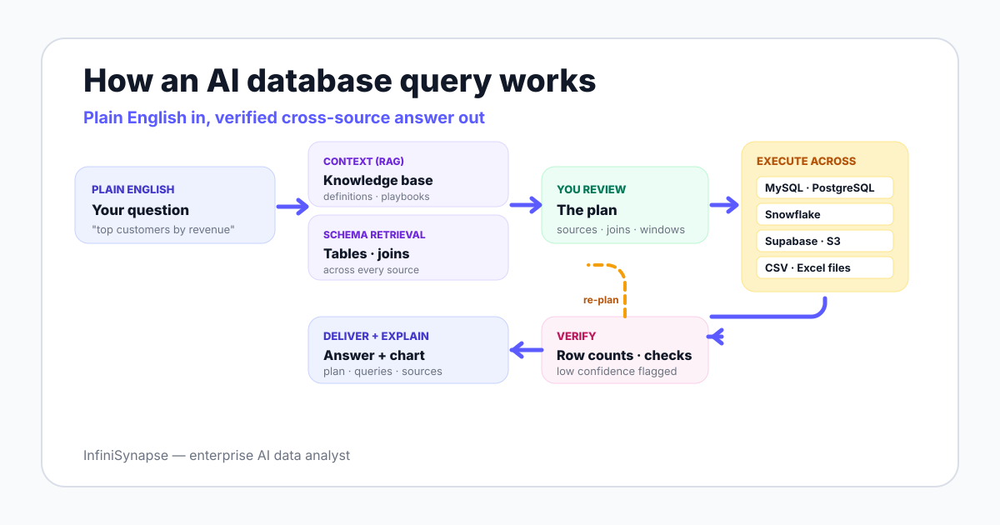

AI Database Query Explained: From Plain English to Verified Cross-Source Results
A working guide to the AI database query pattern: how it routes a natural-language question across MySQL, Snowflake, Supabase, and S3, and why context retrieval matters more than the SQL itself.
AuthorInfiniSynapse Research, product and data architecture team
Published2026-06-15 · Last verified 2026-06-15 · Next review 2026-09-15
Evidence baseInfiniSynapse product documentation, BIRD/Spider benchmarks, Anthropic agent guidance, NIST AI RMF, EU AI Act.
Disclosure: This page is published by InfiniSynapse, which builds an enterprise AI data analyst that performs AI database queries across multi-source connections. We use InfiniSynapse as a worked example, but the patterns, comparison tables, and evaluation checklists are framed so you can apply them to any vendor — including against us.
TL;DR
An AI database query is a plain-English question that an agent owns end to end: context retrieval, plan review, cross-source execution, verification, and a delivered answer with an evidence trail.
The pattern exists because text-to-SQL plateaued below the trust threshold. On the BIRD benchmark, human engineers reach 92.96% execution accuracy and models still trail that bar.
The real moat is not query generation. It is the knowledge base binding that pairs each connected database with its own business semantics so the agent knows what the numbers mean, not just how to fetch them.
Direct answer: what an AI database query does for your team
An AI database query is a plain-English question that an agent turns into a verified result. The agent retrieves business context and schema, drafts an analysis plan, runs SQL across one or more connected databases, checks the output, and delivers an answer with an evidence trail — so your team reviews thinking and sources, not raw SQL.
What an AI database query is — and is not
AI database query: a natural-language question executed end to end by an agent against one or more connected databases, with retrieved business context, a reviewable plan, verified results, and a cited evidence trail.
An AI database query is not a fancier SQL editor. The shift is workflow ownership: the agent decides which tables to read, when to ask the knowledge base for a definition, and when its own output needs another check. Anthropic frames this as the working definition of an agent — a system that dynamically directs its own processes and tool usage rather than following a fixed script.
That distinction matters because most "AI for SQL" features stop at sentence-to-statement translation. A real AI database query keeps going: through verification, source citation, and a result you can hand to a finance lead without a follow-up email.

How it works in six stages
Every credible AI database query implementation runs some version of the same loop. The stages matter more than the branding because each catches a specific class of error.
1. Plain-English intent
Your team writes the question the way they would Slack an analyst — "which channels drove the East China repeat-purchase drop last quarter?" No SQL, no field names, no metric notation.
2. Context retrieval from a bound knowledge base
The agent retrieves your metric definitions, data dictionary, and analysis playbooks before touching the database. This is the difference between a clever SQL generator and a useful one: it knows your company defines "repeat purchase" as a second order within 90 days, not 30.
3. Schema retrieval across connected sources
The agent searches your connected databases for the right tables, fields, and join keys. Retrieval-augmented generation over schema replaces the older pattern of stuffing every table description into the prompt.
4. Plan review before execution
The agent drafts a plan — sources, joins, time windows, output format — and shows it to you. In InfiniSynapse this surfaces as an explicit Plan mode you can edit before anything runs against production. The pattern has academic roots: the ReAct paper showed that interleaving reasoning steps with actions reduces error against single-shot generation.
5. Cross-source execution
Execution can mix SQL against multiple warehouses, an LLM-optimized intermediate representation that connects to a multi-source execution layer, file reads against CSV and Excel, and document retrieval. Read-only credentials are the sane default for production.
6. Verification, explanation, and delivery
The agent sanity-checks the result — row counts, null rates, second-path metric validation — then delivers the answer with the plan, the queries it actually ran, the sources it pulled from, and the caveats. That trail is what makes the number reviewable.
The fastest way to evaluate an AI database query tool: ask who ran the query, then ask for the evidence trail.
Why this pattern exists now
92.96%
Human engineer execution accuracy on the BIRD text-to-SQL benchmark — the bar single-shot SQL generation still has not reached, which is why AI database queries add context and verification loops. Source: BIRD
2022
The ReAct pattern formalized the reason-act loop modern AI database queries rely on, replacing single-pass SQL generation with stepwise tool use. Source: arXiv 2210.03629
2024
The EU AI Act entered into force in August 2024, with obligations phasing in through 2026-2027 — raising the bar for evidence trails on automated analytics. Source: European Commission
Force 1: Text-to-SQL hit a trust ceiling
The Spider benchmark and BIRD made the gap visible. Models generate plausible SQL, but plausible against messy production schemas is not the same as correct. Closing that last gap requires business context and result verification — workflow capabilities, not bigger prompts.
Force 2: Real questions cross sources by default
The questions that actually back up in your analyst queue look like "compare e-commerce revenue across two platforms and match customers via a phone-number CSV from CRM." That spans two databases and a file. Single-warehouse ChatBI cannot touch this without a prior ETL project.
Force 3: Audit pressure is rising
The EU AI Act, the NIST AI Risk Management Framework, and ISO/IEC 42001 all push the same direction: automated outputs need traceable provenance. An AI database query that surfaces its plan, queries, and sources is built for this; a copy-pasted ChatGPT SQL snippet is not.
The cross-source moat: one question, three sources
Here is a documented InfiniSynapse demonstration, useful because it is exactly the shape of question that breaks single-warehouse tools:
"Using phone number as the key, find the highest-spending customers across the JD and Tmall platforms, match their real names from a CSV file, and chart the ranking."
The agent retrieves schema from both platform databases, plans the cross-source join on phone number, aggregates spend per customer, joins names from the uploaded CSV, verifies the join produced sane row counts, and renders the chart — in one request. The traditional alternative is an ETL project measured in days: migrate sources into one warehouse, standardize fields, write the join, then visualize.
This is the structural reason InfiniSynapse lists support for MySQL, PostgreSQL, Snowflake, Supabase, and S3 in the same query plane: cross-source analysis without an ETL prerequisite is the differentiator, not which warehouse you happen to use today.
Knowledge base binding: the moat under the moat
Cross-source connectivity gets you to "I can ask the question." Knowledge base binding gets you to "I can trust the answer." InfiniSynapse pairs each connected data source with a curated knowledge base of metric definitions, data dictionary entries, business rules, and analysis playbooks. The agent retrieves from that knowledge base as a tool call before running SQL — so the database tells the agent what happened and the knowledge base tells the agent what it means in business terms.
Without this binding, even a competent agent guesses at meaning. With it, the agent stops guessing and starts citing. A documented WinClaw telemetry case showed the difference: against an unbound PostgreSQL connection, the agent could only count PAGEVIEW and DOWNLOAD rows. Against the same connection bound to a knowledge base, the agent correctly explained that download:tool:windows:x64:agent_excel represents an Office workflow automation demand cluster — and separated computed facts from interpretation in its output.
Layer
What it answers
What breaks without it
Database
What happened, at what scale, when
Nothing — but the numbers stand alone, unexplained
Bound knowledge base
What those facts mean to the business
The agent guesses definitions; ambiguous metrics get computed wrong silently
Agent loop
How to ask the right questions in the right order
Single-shot SQL with no verification or self-correction
This is why InfiniSynapse documentation calls the knowledge base a tool the agent calls during analysis, not a passive document store. It is the same retrieval-augmented generation primitive used elsewhere in AI — applied specifically to business semantics rather than general knowledge.
Supported databases and per-source guides
InfiniSynapse documents support for these connections, with cross-source joins between any combination. Each guide below walks through the workflow on that specific source with a worked example.
These four terms blur in vendor marketing; the table separates them.
Dimension
SQL editor + autocomplete
Text-to-SQL
ChatBI
AI database query (agent)
Core job
Help you write SQL faster
Generate one SQL statement
Answer modeled-metric questions
Run the whole analysis
Workflow ownership
You
You
Tool, within semantic layer
Agent plans, you review
Cross-source
Whatever you wire up
Single statement, single DB
BI-connected sources only
Databases + files + documents
Business context
None automatic
Whatever you prompt
Pre-built model
Retrieved from bound knowledge base
Verification
You run and check
You run and check
Tool checks against model
Agent checks, flags low confidence
Audit trail
Query history
The SQL it produced
Tool logs
Question + plan + queries + sources + checks
Typical failure
You wrote a bad join
Plausible SQL, wrong table
"Metric not found"
Bad plan — caught at review
When to use an AI database query — and when not to
Good fit
Questions that span databases, files, and documents
"Why did X change?" investigations with no pre-built dashboard
Teams with an analyst backlog of routine pulls
Organizations that can grant scoped, read-only access
Outputs that need reviewable evidence trails
Wrong tool for the job
A fixed daily dashboard — classic BI is cheaper
No connected sources yet — fix connectivity first
No agreed metric definitions — an agent will faithfully automate your ambiguity
Sub-second operational queries inside an app — that is a database problem
Single-spreadsheet workflows — use the spreadsheet
A five-step pilot you can run this week
Pick three real questions your team answered manually last quarter — one single-source, one cross-source, one open-ended "why." You want questions whose correct answers you already know.
Connect one or two sources read-only. A warehouse plus an exported CSV is enough to test cross-source behavior. Watch the agent retrieve schema without you describing tables.
Seed minimal context. Add your top ten metric definitions and a one-page data dictionary to the knowledge base — and confirm the agent cites them back in its plans.
Score plans before execution. Run each question, review the plan, then run. Track plan quality, answer correctness, and evidence-trail usefulness.
Compare against a vendor-neutral checklist — context quality, schema retrieval, planning transparency, execution safety, verification, explainability, memory, deployment control. Use the same checklist across InfiniSynapse and any other AI database query tool you trial.
Run the three-question test on your own database
Connect a MySQL, Snowflake, Supabase, or S3 source, ask one cross-source question, and review the plan, result, chart, and evidence trail. One real run is worth more than any feature list — including this page.
An AI database query is a plain-English question that an agent turns into a verified result by retrieving business context, planning the analysis, running SQL against connected databases, and checking its own output. The user sees the question, the plan, and the evidence trail rather than a raw SQL editor.
How is an AI database query different from text-to-SQL?
Text-to-SQL converts one sentence into one SQL statement. An AI database query owns the full workflow: it retrieves metric definitions, joins across sources, verifies row counts, and returns an explanation. Models still trail human accuracy on the BIRD benchmark, so context and verification matter more than raw generation.
Which databases can InfiniSynapse query in plain English?
InfiniSynapse documents support for MySQL, PostgreSQL, Snowflake, Supabase, and S3, plus uploaded CSV and Excel files. Cross-source joins between these connections are a documented capability — for example joining e-commerce platform tables with a phone-number CSV in one request.
Is an AI database query safe to run on production data?
With guardrails, yes. The pattern is read-only credentials, plan review before execution, query logging, and an evidence trail attached to every result. Governance frameworks such as the NIST AI Risk Management Framework give your security team a shared structure for approving this class of tool.
What is a knowledge base binding and why does it matter?
A knowledge base binding pairs a data source with a curated set of business definitions, dictionary entries, and analysis playbooks. The agent retrieves from this knowledge base as a tool call before running SQL, so the database tells the agent what happened and the knowledge base tells the agent what it means in business terms.
Can an AI database query write data back to a database?
Yes, with explicit permission. InfiniSynapse demonstrates writing an analysis result back to Supabase, including auto-detecting the result schema, creating or matching the target table, and confirming the write. This requires non-read-only credentials and should be reviewed by your security team.
Do I still need a BI tool if I have an AI database query?
Often yes. Dashboards remain the right tool for daily monitoring of agreed metrics. An AI database query is for open-ended questions and cross-source investigations that were never pre-modeled. Many teams run a dashboard for the known and an agent for the new.
How much effort does it take to adopt InfiniSynapse for AI database queries?
A useful pilot needs three things: a read-only connection to one or two databases, the top ten metric definitions seeded into a knowledge base, and three real business questions you already know the answer to. From there you can score plans, results, and evidence trails before committing the team.
Methodology and review notes
Last updated: 2026-06-15 · Next scheduled review: 2026-09-15
Claims on this page are grounded in published agent research (ReAct), public text-to-SQL benchmarks (BIRD, Spider), governance frameworks (NIST AI RMF, EU AI Act, ISO/IEC 42001), and InfiniSynapse product documentation. The cross-source and write-back examples are documented product demonstrations, not independent benchmarks.
Conflict of interest: InfiniSynapse publishes this guide and sells in the AI database query category. To reduce bias, the page includes a vendor-neutral evaluation checklist, explicit cases where simpler tools win, and an external source for every numeric claim.
Update cadence: Reviewed every 90 days for terminology, source links, benchmark figures, and schema consistency.
Sources and references
[Independent] BIRD-SQL: A Big Bench for Large-Scale Database Grounded Text-to-SQL Evaluation. BIRD benchmark leaderboard.
[Independent] Yu et al. Spider: a large-scale, complex and cross-domain semantic parsing and text-to-SQL benchmark. Yale Spider.
[Independent] Yao et al. (2022). ReAct: Synergizing Reasoning and Acting in Language Models. arXiv 2210.03629.